Spatial analysis of 10X example Visium dataset
Lambda Moses
2023-03-04
visium_10x_spatial.RmdIntroduction
In a more introductory vignette, we performed basic non-spatial analyses on a mouse olfactory bulb Visium dataset from the 10X website. In this vignette, we perform spatial analyses in histological space as well as in gene expression space.
Here we load the packages used in this vignette:
library(Voyager)
library(SpatialFeatureExperiment)
library(SingleCellExperiment)
#> Loading required package: SummarizedExperiment
#> Loading required package: MatrixGenerics
#> Loading required package: matrixStats
#>
#> Attaching package: 'MatrixGenerics'
#> The following objects are masked from 'package:matrixStats':
#>
#> colAlls, colAnyNAs, colAnys, colAvgsPerRowSet, colCollapse,
#> colCounts, colCummaxs, colCummins, colCumprods, colCumsums,
#> colDiffs, colIQRDiffs, colIQRs, colLogSumExps, colMadDiffs,
#> colMads, colMaxs, colMeans2, colMedians, colMins, colOrderStats,
#> colProds, colQuantiles, colRanges, colRanks, colSdDiffs, colSds,
#> colSums2, colTabulates, colVarDiffs, colVars, colWeightedMads,
#> colWeightedMeans, colWeightedMedians, colWeightedSds,
#> colWeightedVars, rowAlls, rowAnyNAs, rowAnys, rowAvgsPerColSet,
#> rowCollapse, rowCounts, rowCummaxs, rowCummins, rowCumprods,
#> rowCumsums, rowDiffs, rowIQRDiffs, rowIQRs, rowLogSumExps,
#> rowMadDiffs, rowMads, rowMaxs, rowMeans2, rowMedians, rowMins,
#> rowOrderStats, rowProds, rowQuantiles, rowRanges, rowRanks,
#> rowSdDiffs, rowSds, rowSums2, rowTabulates, rowVarDiffs, rowVars,
#> rowWeightedMads, rowWeightedMeans, rowWeightedMedians,
#> rowWeightedSds, rowWeightedVars
#> Loading required package: GenomicRanges
#> Loading required package: stats4
#> Loading required package: BiocGenerics
#>
#> Attaching package: 'BiocGenerics'
#> The following objects are masked from 'package:stats':
#>
#> IQR, mad, sd, var, xtabs
#> The following objects are masked from 'package:base':
#>
#> anyDuplicated, aperm, append, as.data.frame, basename, cbind,
#> colnames, dirname, do.call, duplicated, eval, evalq, Filter, Find,
#> get, grep, grepl, intersect, is.unsorted, lapply, Map, mapply,
#> match, mget, order, paste, pmax, pmax.int, pmin, pmin.int,
#> Position, rank, rbind, Reduce, rownames, sapply, setdiff, sort,
#> table, tapply, union, unique, unsplit, which.max, which.min
#> Loading required package: S4Vectors
#>
#> Attaching package: 'S4Vectors'
#> The following objects are masked from 'package:base':
#>
#> expand.grid, I, unname
#> Loading required package: IRanges
#> Loading required package: GenomeInfoDb
#> Loading required package: Biobase
#> Welcome to Bioconductor
#>
#> Vignettes contain introductory material; view with
#> 'browseVignettes()'. To cite Bioconductor, see
#> 'citation("Biobase")', and for packages 'citation("pkgname")'.
#>
#> Attaching package: 'Biobase'
#> The following object is masked from 'package:MatrixGenerics':
#>
#> rowMedians
#> The following objects are masked from 'package:matrixStats':
#>
#> anyMissing, rowMedians
library(ggplot2)
library(scater)
#> Loading required package: scuttle
library(scuttle)
library(scran)
library(stringr)
library(patchwork)
library(bluster)
library(rjson)
library(EBImage)
#>
#> Attaching package: 'EBImage'
#> The following object is masked from 'package:SummarizedExperiment':
#>
#> resize
#> The following object is masked from 'package:Biobase':
#>
#> channel
#> The following objects are masked from 'package:GenomicRanges':
#>
#> resize, tile
#> The following objects are masked from 'package:IRanges':
#>
#> resize, tile
library(terra)
#> terra 1.7.3
#>
#> Attaching package: 'terra'
#> The following objects are masked from 'package:EBImage':
#>
#> flip, rotate
#> The following object is masked from 'package:patchwork':
#>
#> area
#> The following objects are masked from 'package:SummarizedExperiment':
#>
#> distance, nearest, shift, trim, values, values<-, width
#> The following objects are masked from 'package:GenomicRanges':
#>
#> distance, gaps, nearest, shift, trim, values, values<-, width
#> The following objects are masked from 'package:IRanges':
#>
#> distance, gaps, nearest, shift, trim, width
#> The following objects are masked from 'package:S4Vectors':
#>
#> values, values<-, width
#> The following object is masked from 'package:BiocGenerics':
#>
#> width
#> The following objects are masked from 'package:SpatialFeatureExperiment':
#>
#> centroids, crop
library(rlang)
#>
#> Attaching package: 'rlang'
#> The following object is masked from 'package:Biobase':
#>
#> exprs
library(sf)
#> Linking to GEOS 3.10.2, GDAL 3.4.2, PROJ 8.2.1; sf_use_s2() is TRUE
library(rmapshaper)
library(dplyr)
#>
#> Attaching package: 'dplyr'
#> The following objects are masked from 'package:terra':
#>
#> intersect, union
#> The following object is masked from 'package:EBImage':
#>
#> combine
#> The following object is masked from 'package:Biobase':
#>
#> combine
#> The following objects are masked from 'package:GenomicRanges':
#>
#> intersect, setdiff, union
#> The following object is masked from 'package:GenomeInfoDb':
#>
#> intersect
#> The following objects are masked from 'package:IRanges':
#>
#> collapse, desc, intersect, setdiff, slice, union
#> The following objects are masked from 'package:S4Vectors':
#>
#> first, intersect, rename, setdiff, setequal, union
#> The following objects are masked from 'package:BiocGenerics':
#>
#> combine, intersect, setdiff, union
#> The following object is masked from 'package:matrixStats':
#>
#> count
#> The following objects are masked from 'package:stats':
#>
#> filter, lag
#> The following objects are masked from 'package:base':
#>
#> intersect, setdiff, setequal, union
library(BiocParallel)
library(BiocNeighbors)
theme_set(theme_bw())Here we download the data from the 10X website. This is the unfiltered gene count matrix:
if (!file.exists("visium_ob.tar.gz"))
download.file("https://cf.10xgenomics.com/samples/spatial-exp/2.0.0/Visium_Mouse_Olfactory_Bulb/Visium_Mouse_Olfactory_Bulb_raw_feature_bc_matrix.tar.gz",
destfile = "visium_ob.tar.gz")This is the spatial information:
if (!file.exists("visium_ob_spatial.tar.gz"))
download.file("https://cf.10xgenomics.com/samples/spatial-exp/2.0.0/Visium_Mouse_Olfactory_Bulb/Visium_Mouse_Olfactory_Bulb_spatial.tar.gz",
destfile = "visium_ob_spatial.tar.gz")Decompress the downloaded content:
if (!dir.exists("outs")) {
dir.create("outs")
system("tar -xvf visium_ob.tar.gz -C outs")
system("tar -xvf visium_ob_spatial.tar.gz -C outs")
}Contents of the outs directory as from Space Ranger is
explained in the
introductory vignette.
Here we read the data into R as an SFE object.
(sfe <- read10xVisiumSFE(samples = "outs", type = "sparse", data = "raw"))
#> Warning: as(<dgTMatrix>, "dgCMatrix") is deprecated since Matrix 1.5-0; do
#> as(., "CsparseMatrix") instead
#> class: SpatialFeatureExperiment
#> dim: 32285 4992
#> metadata(0):
#> assays(1): counts
#> rownames(32285): ENSMUSG00000051951 ENSMUSG00000089699 ...
#> ENSMUSG00000095019 ENSMUSG00000095041
#> rowData names(1): symbol
#> colnames(4992): AAACAACGAATAGTTC-1 AAACAAGTATCTCCCA-1 ...
#> TTGTTTGTATTACACG-1 TTGTTTGTGTAAATTC-1
#> colData names(4): in_tissue array_row array_col sample_id
#> reducedDimNames(0):
#> mainExpName: NULL
#> altExpNames(0):
#> spatialCoords names(2) : pxl_row_in_fullres pxl_col_in_fullres
#> imgData names(4): sample_id image_id data scaleFactor
#>
#> Geometries:
#> colGeometries: spotPoly (POLYGON)
#>
#> Graphs:
#> sample01:Here we add QC metrics, already plotted in the introductory vignette.
is_mt <- str_detect(rowData(sfe)$symbol, "^mt-")
sfe <- addPerCellQCMetrics(sfe, subsets = list(mito = is_mt))Tissue segmentation
While Space Ranger can automatically detect which spots are in tissue
and the Loupe browser can be used to manually annotate which spots are
in tissue, it may be interesting to get the tissue outline polygon, so
we would know how much each spot overlaps with the tissue and plot the
outline. The tissue boundary polygon can be manually annotated with
QuPath, which saves the polygon as a GeoJSON and can be directly read
into R with st_read().
Or we can segment the tissue computationally. R generally isn’t great
for image processing, but there are some packages that can perform the
segmentation, such as EBImage,
which is based on its own in house C and C++ code, and imager, which
is based on CImg.
Here we don’t have the full resolution image. We will perform tissue
segmentation on the high resolution downsampled image and then scale it
to make the coordinates of the tissue boundary match those of the spots.
The EBImage package is used here. Compared to OpenCV,
EBImage is slow on the full resolution image, but should be
fine here for the downsized image.

When rendered as a static webpage, the image is static, but when run interactively, this image will be shown in an interactive widget where you can zoom and pan.
Here we show the RGB channels separately

hist(img)
The tissue can be discerned with thresholding. The tall peak on the right is the background. The much lower peaks from around 0.6 to 0.85 must be the tissue. To capture the faint bluish region, the blue channel is used for thresholding. The threshold here is chosen based on the histogram and experimenting with nearby values.
mask <- img2[,,3] < 0.87
display(mask)
Then we use an opening operation (erosion followed by dilation) to denoise

There are some small holes in the tissue, which can be removed by a closing operation (dilation followed by erosion):

There are some larger holes in the tissue mask, which may be real holes or faint regions with few nuclei missed by thresholding. They might not be large enough to affect which Visium spots intersect the tissue.
Now the main piece of tissue is clear. It must be the object with the
largest area. However, there are two small pieces that should belong to
the tissue at the top left. The debris and fiducials can be removed by
setting all pixels in the mask outside the bounding box of the main
piece to 0. Here we assign a different value to each contiguous object
with bwlabel(), and use
computeFeatures.shape() to find the area among other shape
features (e.g. perimeter) of each object.
mask_label <- bwlabel(mask_close)
fts <- computeFeatures.shape(mask_label)
head(fts)
#> s.area s.perimeter s.radius.mean s.radius.sd s.radius.min s.radius.max
#> 1 39 25 3.428773 1.3542219 1.4176036 5.762777
#> 2 20 14 2.032665 0.3439068 1.5000000 2.500000
#> 3 8 8 1.144123 0.4370160 0.7071068 1.581139
#> 4 14 10 1.689175 0.2160726 1.5811388 2.121320
#> 5 15 12 1.716761 0.4684015 1.0000000 2.236068
#> 6 9 8 1.207107 0.2071068 1.0000000 1.414214
summary(fts[,"s.area"])
#> Min. 1st Qu. Median Mean 3rd Qu. Max.
#> 8.0 14.0 51.0 595.9 345.0 496326.0
max_ind <- which.max(fts[,"s.area"])
inds <- which(as.array(mask_label) == max_ind, arr.ind = TRUE)
head(inds)
#> row col
#> [1,] 1168 562
#> [2,] 1169 562
#> [3,] 1170 562
#> [4,] 1158 563
#> [5,] 1159 563
#> [6,] 1160 563
row_inds <- c(seq_len(min(inds[,1])-1), seq(max(inds[,1])+1, nrow(mask_label), by = 1))
col_inds <- c(seq_len(min(inds[,2])-1), seq(max(inds[,2])+1, nrow(mask_label), by = 1))
mask_label[row_inds, ] <- 0
mask_label[,col_inds] <- 0
display(mask_label)
Then remove the small pieces that are debris.
unique(as.vector(mask_label))
#> [1] 0 421 425 429 430 438 450 458 461 469 473 483 487 505 523 633 640 642 651
#> [20] 678 739 741 757 762 775 778 789 791 797 805 810 813 820 821 822 826 831 838
#> [39] 839 840 843 845 848 849 861 862 863
fts2 <- fts[unique(as.vector(mask_label))[-1],]
fts2 <- fts2[order(fts2[,"s.area"], decreasing = TRUE),]
plot(fts2[,1][-1], type = "l", ylab = "Area")
head(fts2, 10)
#> s.area s.perimeter s.radius.mean s.radius.sd s.radius.min s.radius.max
#> 421 496326 3151 395.118732 68.6493949 234.1605637 485.715835
#> 450 217 55 7.840627 1.2883202 5.0010247 10.458197
#> 849 211 63 7.961248 2.0228566 3.8569142 12.189753
#> 797 182 56 7.547362 2.3368359 3.0772370 11.839919
#> 461 136 54 7.186020 3.2751628 0.9255555 12.479805
#> 741 92 56 6.365661 2.8382829 1.3273276 11.653219
#> 840 69 33 4.503526 1.6417370 1.6026264 7.076974
#> 862 63 37 4.854424 2.4445530 0.6361407 8.837838
#> 839 45 25 3.305562 0.7074306 1.9320455 4.526897
#> 775 32 22 2.887407 1.1755375 0.5300865 4.543636Object number 797 is a piece of debris at the bottom left. The other pieces with area over 100 pixels are tissue. Since debris really is small bits of tissue, so the boundary between debris and tissue can be blurry. Here the two are distinguished by morphology on the H&E image and proximity to the main tissue.
#display(mask_label == 797)Here we remove the debris from the mask
mask_label[mask_label %in% c(797, as.numeric(rownames(fts2)[fts2[,1] < 100]))] <- 0Since most holes in the mask are faint regions of the tissue missed by thresholding, the holes will be filled
mask_label <- fillHull(mask_label)
display(paintObjects(mask_label, img, col=c("red", "yellow"), opac=c(1, 0.3)))
This segmentation process took a lot of manual oversight, in choosing the threshold, choosing kernel size and shape in the opening and closing operations, deciding whether to fill the holes, and deciding what is debris and what is tissue.
Finally, the image needs to be rotated to match the spots.
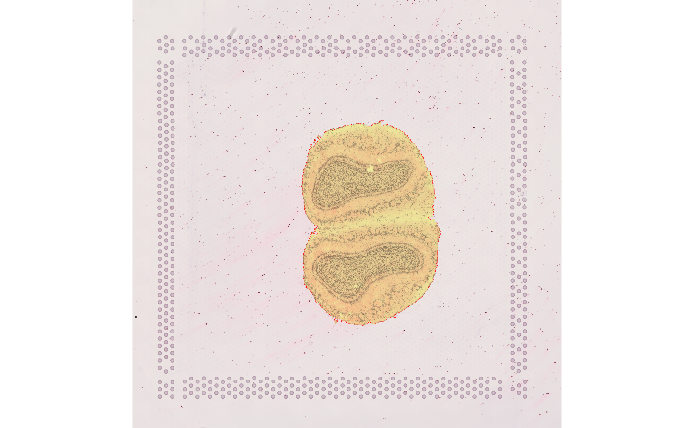
Convert tissue mask to polygon
Now we have the tissue mask, which we will convert to polygon. While
OpenCV can directly perform the conversion, as there isn’t a
comprehensive R wrapper of OpenCV, this conversion is more convoluted in
R. We first convert the Image object to a raster as
implemented in terra, the core R package for geospatial
raster data. Then terra can convert the raster to polygon.
As this image is downsized, the polygon will look quite pixelated. To
mitigate this pixelation and save memory, the ms_simplify()
function is used to simplify the polygon, only keeping a small
proportion of all vertices. The st_simplify() function in
sf can also simplify the polygons, but we can’t specify
what proportion of vertices to keep.
raster2polygon <- function(seg, keep = 0.2) {
r <- rast(t(as.array(seg)), extent = ext(0, nrow(seg), 0, ncol(seg)))
r[r < 1] <- NA
contours <- st_as_sf(as.polygons(r, dissolve = TRUE))
simplified <- ms_simplify(contours, keep = keep)
list(full = contours,
simplified = simplified)
}
tb <- raster2polygon(mask_label)Before adding the geometry to the SFE object, it needs to be scaled to match the coordinates of the spots
scale_factors <- fromJSON(file = "outs/spatial/scalefactors_json.json")
tb$simplified$geometry <- tb$simplified$geometry / scale_factors$tissue_hires_scalef
tissueBoundary(sfe) <- tb$simplified
plotSpatialFeature(sfe, "sum", annotGeometryName = "tissueBoundary",
annot_fixed = list(fill = NA, size = 0.5, color = "black")) +
theme_void()
Then we can use geometric operations to find which spots intersect tissue, which spots are covered by tissue, and how much of each spot intersects tissue.
# Which spots intersect tissue
sfe$int_tissue <- annotPred(sfe, colGeometryName = "spotPoly",
annotGeometryName = "tissueBoundary",
pred = st_intersects)
sfe$cov_tissue <- annotPred(sfe, colGeometryName = "spotPoly",
annotGeometryName = "tissueBoundary",
pred = st_covered_by)Discrepancies between Space Ranger’s annotation and the annotation based on tissue segmentation here:
sfe$diff_sr <- case_when(sfe$in_tissue == sfe$int_tissue ~ "same",
sfe$in_tissue & !sfe$int_tissue ~ "Space Ranger",
sfe$int_tissue & !sfe$in_tissue ~ "segmentation") |>
factor(levels = c("Space Ranger", "same", "segmentation"))
plotSpatialFeature(sfe, "diff_sr",
annotGeometryName = "tissueBoundary",
annot_fixed = list(fill = NA, size = 0.5, color = "black")) +
scale_fill_brewer(type = "div", palette = 4) +
theme_void()
#> Scale for fill is already present.
#> Adding another scale for fill, which will replace the existing scale.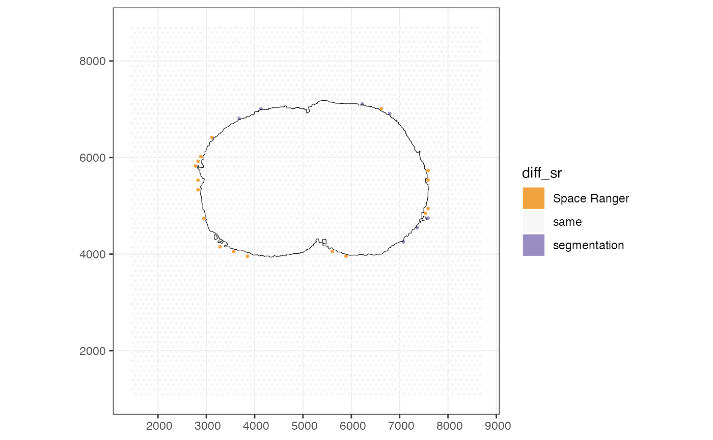
Spots at the margin can intersect the tissue without being covered by it.
sfe$diff_int_cov <- sfe$int_tissue != sfe$cov_tissue
plotSpatialFeature(sfe, "diff_int_cov",
annotGeometryName = "tissueBoundary",
annot_fixed = list(fill = NA, size = 0.5, color = "black")) +
theme_void()
We can also get the geometries of the intersections between the tissue and the Visium spots, and then calculate what percentage of each spot is in tissue. However, this percentage may not be very useful if the tissue segmentation is subject to error. This percentage may be more useful for pathologist annotated histological regions or objects such as nuclei and myofibers.
spot_ints <- annotOp(sfe, colGeometryName = "spotPoly",
annotGeometryName = "tissueBoundary", op = st_intersection)
sfe$pct_tissue <- st_area(spot_ints) / st_area(spotPoly(sfe)) * 100For spots that intersect tissue, does total counts relate to percentage of the spot in tissue?
sfe_tissue <- sfe[,sfe$int_tissue]
plotColDataBin2D(sfe_tissue, x = "pct_tissue", y = "sum", subset = "diff_int_cov",
name_true = "Not covered", name_false = "Covered", bins = 50)
Spots that are not fully covered by tissue have lower total UMI counts, which can be due to both that they are not fully in tissue and the cell types with lower total counts in the histological region near the edge, as some spots fully covered by tissue also have low UMI counts.
Spatial autocorrelation of QC metrics
colGraph(sfe_tissue, "visium") <- findVisiumGraph(sfe_tissue)
qc_features <- c("sum", "detected", "subsets_mito_percent")
sfe_tissue <- colDataUnivariate(sfe_tissue, "moran.mc", qc_features, nsim = 200)
plotMoranMC(sfe_tissue, qc_features)
sfe_tissue <- colDataUnivariate(sfe_tissue, "sp.correlogram", qc_features,
order = 8)
plotCorrelogram(sfe_tissue, qc_features)
sfe_tissue <- colDataUnivariate(sfe_tissue, "localmoran", qc_features)
plotLocalResult(sfe_tissue, "localmoran", qc_features, ncol = 2,
colGeometryName = "spotPoly", divergent = TRUE,
diverge_center = 0) &
theme_void()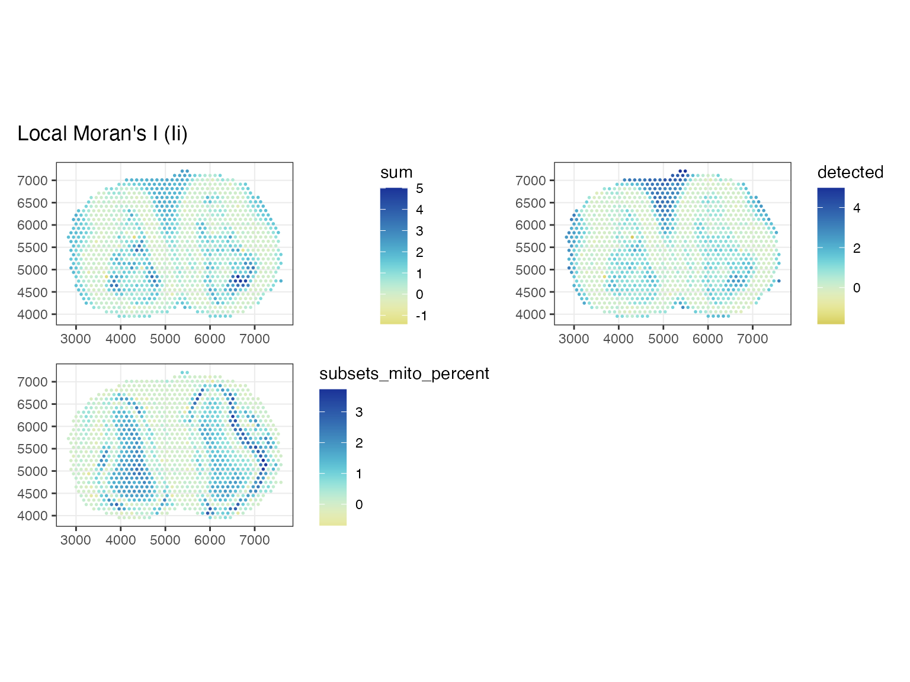
sfe_tissue <- colDataUnivariate(sfe_tissue, "LOSH", qc_features)
plotLocalResult(sfe_tissue, "LOSH", qc_features, ncol = 2,
colGeometryName = "spotPoly") &
theme_void()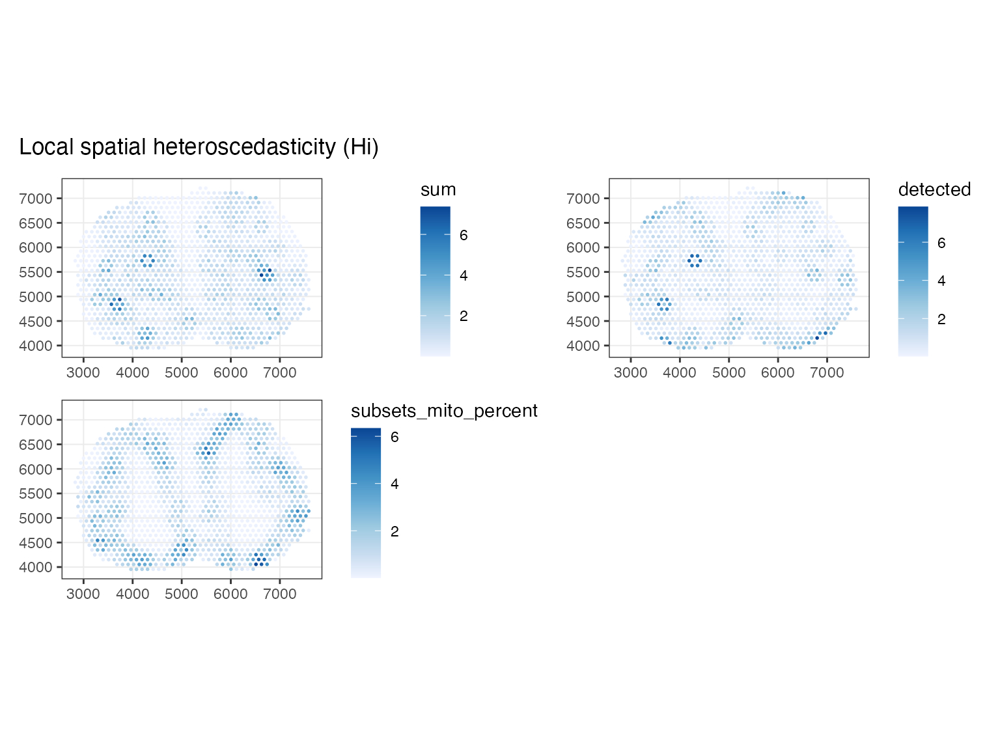
sfe_tissue <- colDataUnivariate(sfe_tissue, "moran.plot", qc_features)
moranPlot(sfe_tissue, "subsets_mito_percent")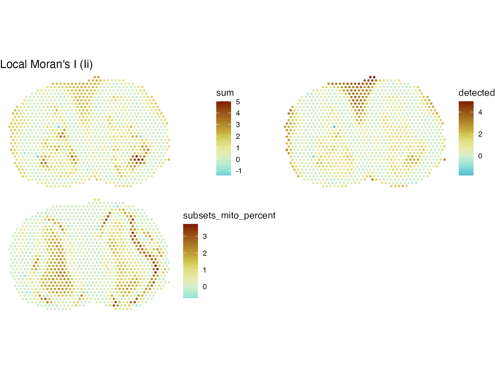
Spatial autocorrelation of gene expression
Normalize data with the scran method, and find highly
variable genes
#clusters <- quickCluster(sfe_tissue)
#sfe_tissue <- computeSumFactors(sfe_tissue, clusters=clusters)
#sfe_tissue <- sfe_tissue[, sizeFactors(sfe_tissue) > 0]
sfe_tissue <- logNormCounts(sfe_tissue)
dec <- modelGeneVar(sfe_tissue)
hvgs <- getTopHVGs(dec, n = 2000)Find Moran’s I for all highly variable genes
sfe_tissue <- runMoransI(sfe_tissue, features = hvgs, BPPARAM = MulticoreParam(2))
plotRowDataHistogram(sfe_tissue, "moran_sample01")
#> Warning: Removed 30285 rows containing non-finite values (`stat_bin()`).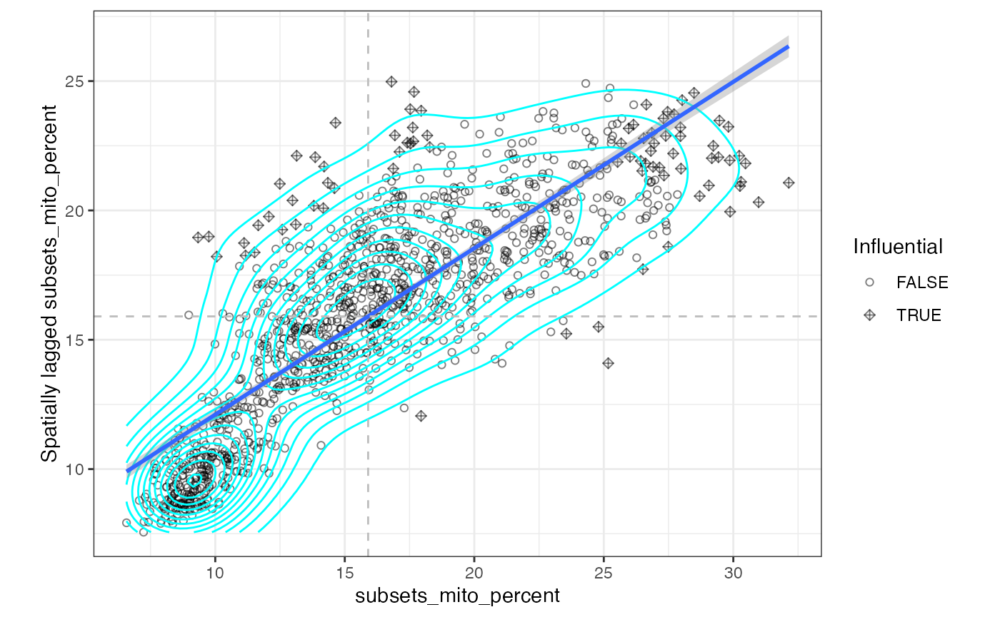
The vast majority of genes have positive Moran’s I. Here we plot the genes with the highest Moran’s I.
top_moran <- rownames(sfe_tissue)[order(rowData(sfe_tissue)$moran_sample01,
decreasing = TRUE)[1:9]]
plotSpatialFeature(sfe_tissue, top_moran, ncol = 3) & theme_void()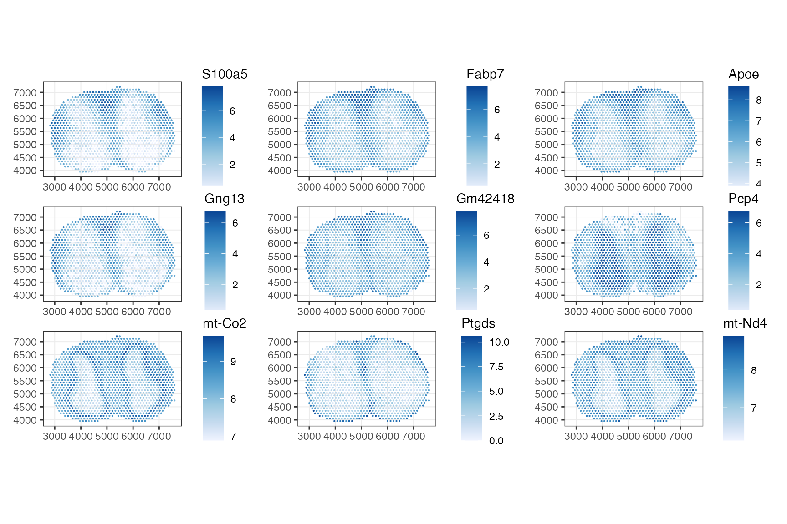
Here global Moran’s I seems to be more about tissue structure.
Some genes have negative Moran’s I that might not be statistically significant
neg_moran <- rownames(sfe_tissue)[order(rowData(sfe_tissue)$moran_sample01,
decreasing = FALSE)[1:9]]
plotSpatialFeature(sfe_tissue, neg_moran, ncol = 3) & theme_void()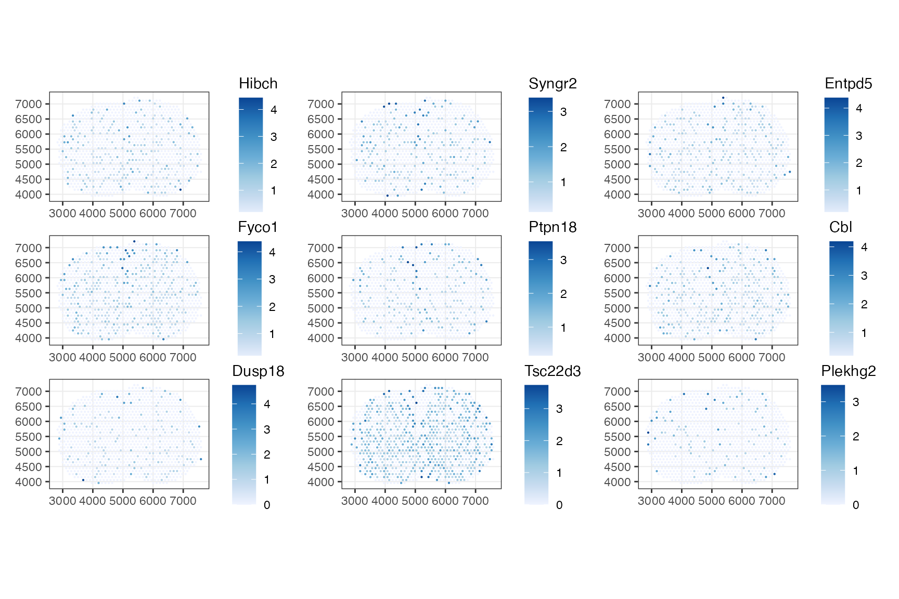
sfe_tissue <- runUnivariate(sfe_tissue, "moran.mc", neg_moran,
colGraphName = "visium", nsim = 200, alternative = "less")
plotMoranMC(sfe_tissue, neg_moran)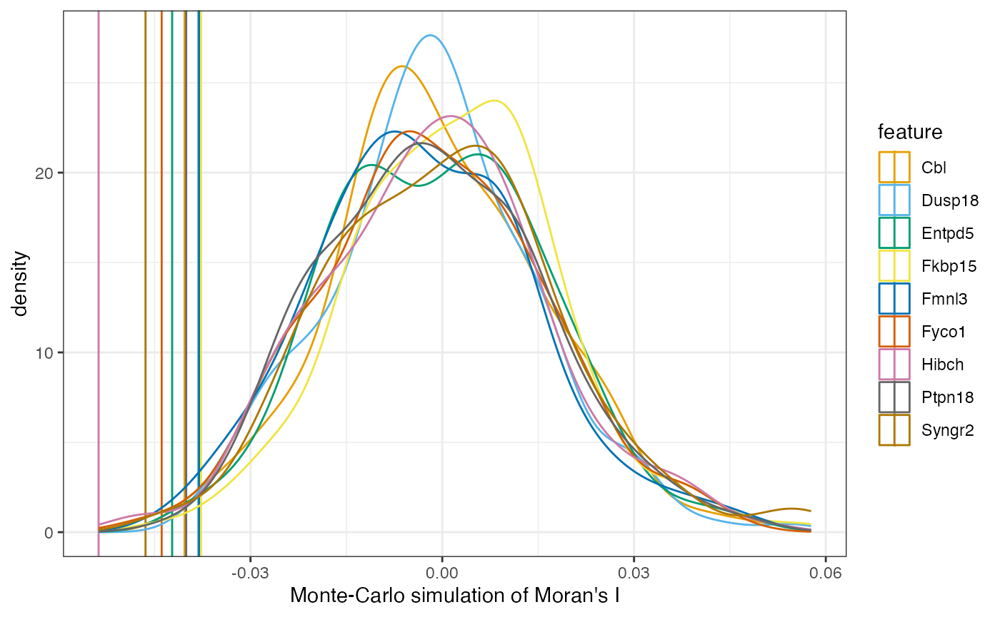
rowData(sfe_tissue)[neg_moran, c("moran_sample01", "moran.mc_p.value_sample01")]
#> DataFrame with 9 rows and 2 columns
#> moran_sample01 moran.mc_p.value_sample01
#> <numeric> <numeric>
#> ENSMUSG00000041426 -0.0531915 0.00497512
#> ENSMUSG00000048277 -0.0451179 0.00497512
#> ENSMUSG00000021236 -0.0445148 0.01990050
#> ENSMUSG00000025241 -0.0419121 0.01990050
#> ENSMUSG00000026126 -0.0399917 0.00995025
#> ENSMUSG00000034342 -0.0393964 0.02487562
#> ENSMUSG00000047205 -0.0381599 0.00497512
#> ENSMUSG00000031431 -0.0369456 0.00995025
#> ENSMUSG00000037552 -0.0368969 0.01990050As there’re 2000 highly variable genes and 2000 tests, these would no longer be significant after correcting for multiple testing.
Does global Moran’s I relate to gene expression level?
sfe_tissue <- addPerFeatureQCMetrics(sfe_tissue)
names(rowData(sfe_tissue))
#> [1] "symbol" "moran_sample01"
#> [3] "K_sample01" "moran.mc_statistic_sample01"
#> [5] "moran.mc_parameter_sample01" "moran.mc_p.value_sample01"
#> [7] "moran.mc_alternative_sample01" "moran.mc_method_sample01"
#> [9] "moran.mc_data.name_sample01" "moran.mc_res_sample01"
#> [11] "mean" "detected"
plotRowData(sfe_tissue, x = "mean", y = "moran_sample01") +
scale_x_log10() +
annotation_logticks(sides = "b") +
geom_density2d()
#> Warning: Transformation introduced infinite values in continuous x-axis
#> Transformation introduced infinite values in continuous x-axis
#> Warning: Removed 30285 rows containing non-finite values
#> (`stat_density2d()`).
#> Warning: Removed 30285 rows containing missing values (`geom_point()`).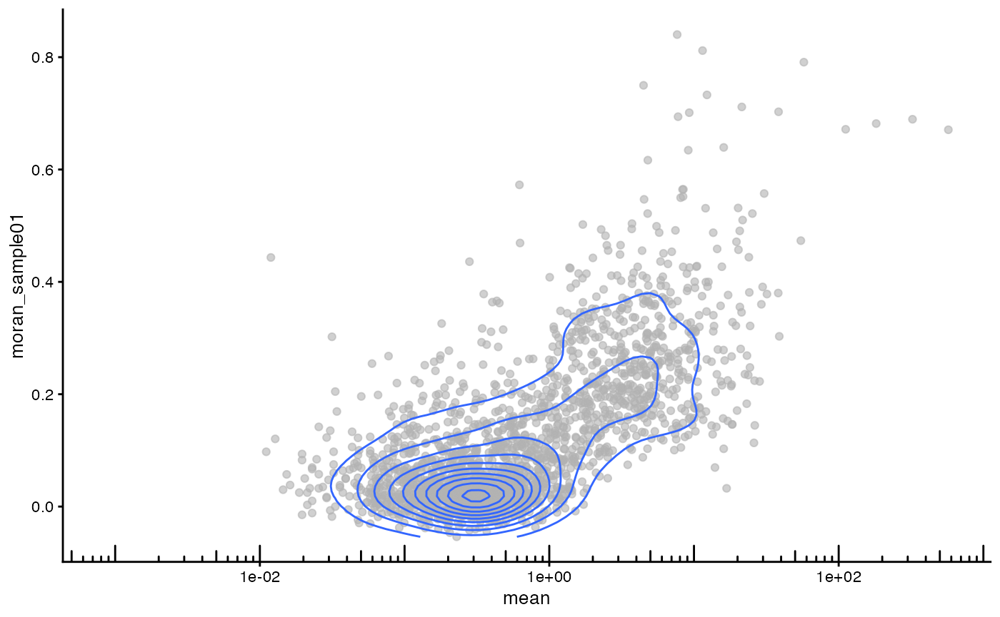
Genes that are more highly expressed overall tend to have higher Moran’s I.
Apply spatial analysis methods to gene expression space
Spatial statistics that require a spatial neighborhood graph can also be applied to the k nearest neighbor graph not in histological space but in gene expression space. This is done in more depth in this vignette.
sfe_tissue <- runPCA(sfe_tissue, ncomponents = 30, subset_row = hvgs,
scale = TRUE) # scale as in Seurat
foo <- findKNN(reducedDim(sfe_tissue, "PCA")[,1:10], k=10, BNPARAM=AnnoyParam())
# Split by row
foo_nb <- asplit(foo$index, 1)
dmat <- 1/foo$distance
# Row normalize the weights
dmat <- sweep(dmat, 1, rowSums(dmat), FUN = "/")
glist <- asplit(dmat, 1)
# Sort based on index
ord <- lapply(foo_nb, order)
foo_nb <- lapply(seq_along(foo_nb), function(i) foo_nb[[i]][ord[[i]]])
class(foo_nb) <- "nb"
glist <- lapply(seq_along(glist), function(i) glist[[i]][ord[[i]]])
listw <- list(style = "W",
neighbours = foo_nb,
weights = glist)
class(listw) <- "listw"
attr(listw, "region.id") <- colnames(sfe_tissue)
colGraph(sfe_tissue, "knn10") <- listw
sfe_tissue <- runMoransI(sfe_tissue, features = hvgs, BPPARAM = MulticoreParam(2),
colGraphName = "knn10")Caveat in the current version of Voyager: running Moran’s I again
with a different neighborhood graph will overwrite the existing Moran’s
I results. In the next version, users may specify new names for the same
statistics with different parameters and the parameters will be stored
in rowData.
These are the genes that tend to be more similar to their neighbors in the 10 nearest neighbor graph in PCA space for gene expression rather than in histological space:
top_moran2 <- rownames(sfe_tissue)[order(rowData(sfe_tissue)$moran_sample01,
decreasing = TRUE)[1:9]]
plotSpatialFeature(sfe_tissue, top_moran2, ncol = 3) & theme_void()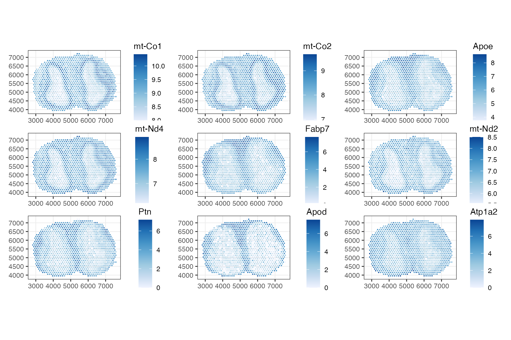
Although this Moran’s I was not computed in histological space, these genes with the highest Moran’s I in PCA space also show spatial structure, as different cell types reside in different spatial regions.
Session info
sessionInfo()
#> R version 4.2.2 (2022-10-31)
#> Platform: x86_64-apple-darwin17.0 (64-bit)
#> Running under: macOS Big Sur ... 10.16
#>
#> Matrix products: default
#> BLAS: /Library/Frameworks/R.framework/Versions/4.2/Resources/lib/libRblas.0.dylib
#> LAPACK: /Library/Frameworks/R.framework/Versions/4.2/Resources/lib/libRlapack.dylib
#>
#> locale:
#> [1] en_US.UTF-8/en_US.UTF-8/en_US.UTF-8/C/en_US.UTF-8/en_US.UTF-8
#>
#> attached base packages:
#> [1] stats4 stats graphics grDevices utils datasets methods
#> [8] base
#>
#> other attached packages:
#> [1] BiocNeighbors_1.16.0 BiocParallel_1.32.5
#> [3] dplyr_1.1.0 rmapshaper_0.4.6
#> [5] sf_1.0-9 rlang_1.0.6
#> [7] terra_1.7-3 EBImage_4.40.0
#> [9] rjson_0.2.21 bluster_1.8.0
#> [11] patchwork_1.1.2 stringr_1.5.0
#> [13] scran_1.26.2 scater_1.27.6
#> [15] scuttle_1.8.4 ggplot2_3.4.1
#> [17] SingleCellExperiment_1.20.0 SummarizedExperiment_1.28.0
#> [19] Biobase_2.58.0 GenomicRanges_1.50.2
#> [21] GenomeInfoDb_1.34.9 IRanges_2.32.0
#> [23] S4Vectors_0.36.2 BiocGenerics_0.44.0
#> [25] MatrixGenerics_1.10.0 matrixStats_0.63.0
#> [27] SpatialFeatureExperiment_1.0.3 Voyager_1.0.10
#>
#> loaded via a namespace (and not attached):
#> [1] systemfonts_1.0.4 igraph_1.4.1
#> [3] lazyeval_0.2.2 splines_4.2.2
#> [5] sp_1.6-0 jqr_1.2.3
#> [7] geojsonlint_0.4.0 digest_0.6.31
#> [9] htmltools_0.5.4 viridis_0.6.2
#> [11] magick_2.7.3 tiff_0.1-11
#> [13] fansi_1.0.4 magrittr_2.0.3
#> [15] memoise_2.0.1 geojsonsf_2.0.3
#> [17] ScaledMatrix_1.6.0 SpatialExperiment_1.8.0
#> [19] cluster_2.1.4 limma_3.54.2
#> [21] R.utils_2.12.2 pkgdown_2.0.7
#> [23] jpeg_0.1-10 colorspace_2.1-0
#> [25] ggrepel_0.9.3 jsonvalidate_1.3.2
#> [27] textshaping_0.3.6 xfun_0.37
#> [29] RCurl_1.98-1.10 jsonlite_1.8.4
#> [31] glue_1.6.2 gtable_0.3.1
#> [33] zlibbioc_1.44.0 XVector_0.38.0
#> [35] DelayedArray_0.24.0 V8_4.2.2
#> [37] scico_1.3.1 BiocSingular_1.14.0
#> [39] DropletUtils_1.18.1 Rhdf5lib_1.20.0
#> [41] HDF5Array_1.26.0 abind_1.4-5
#> [43] scales_1.2.1 DBI_1.1.3
#> [45] edgeR_3.40.2 Rcpp_1.0.10
#> [47] isoband_0.2.7 viridisLite_0.4.1
#> [49] spData_2.2.2 units_0.8-1
#> [51] dqrng_0.3.0 foreign_0.8-84
#> [53] spdep_1.2-8 rsvd_1.0.5
#> [55] proxy_0.4-27 metapod_1.6.0
#> [57] htmlwidgets_1.6.1 RColorBrewer_1.1-3
#> [59] wk_0.7.1 farver_2.1.1
#> [61] pkgconfig_2.0.3 R.methodsS3_1.8.2
#> [63] sass_0.4.5 deldir_1.0-6
#> [65] crul_1.3 locfit_1.5-9.7
#> [67] utf8_1.2.3 labeling_0.4.2
#> [69] tidyselect_1.2.0 munsell_0.5.0
#> [71] tools_4.2.2 cachem_1.0.7
#> [73] cli_3.6.0 dbscan_1.1-11
#> [75] generics_0.1.3 evaluate_0.20
#> [77] fastmap_1.1.1 fftwtools_0.9-11
#> [79] yaml_2.3.7 ragg_1.2.5
#> [81] knitr_1.42 fs_1.6.1
#> [83] purrr_1.0.1 s2_1.1.2
#> [85] nlme_3.1-162 sparseMatrixStats_1.10.0
#> [87] R.oo_1.25.0 compiler_4.2.2
#> [89] curl_5.0.0 beeswarm_0.4.0
#> [91] png_0.1-8 e1071_1.7-13
#> [93] tibble_3.1.8 statmod_1.5.0
#> [95] bslib_0.4.2 stringi_1.7.12
#> [97] highr_0.10 desc_1.4.2
#> [99] rgeos_0.6-1 lattice_0.20-45
#> [101] Matrix_1.5-3 classInt_0.4-9
#> [103] vctrs_0.5.2 pillar_1.8.1
#> [105] lifecycle_1.0.3 rhdf5filters_1.10.0
#> [107] jquerylib_0.1.4 cowplot_1.1.1
#> [109] maptools_1.1-6 geojsonio_0.10.0
#> [111] bitops_1.0-7 irlba_2.3.5.1
#> [113] R6_2.5.1 KernSmooth_2.23-20
#> [115] gridExtra_2.3 vipor_0.4.5
#> [117] codetools_0.2-19 MASS_7.3-58.2
#> [119] boot_1.3-28.1 rhdf5_2.42.0
#> [121] rprojroot_2.0.3 httpcode_0.3.0
#> [123] withr_2.5.0 GenomeInfoDbData_1.2.9
#> [125] mgcv_1.8-42 geojson_0.3.4
#> [127] parallel_4.2.2 grid_4.2.2
#> [129] beachmat_2.14.0 class_7.3-21
#> [131] rmarkdown_2.20 DelayedMatrixStats_1.20.0
#> [133] ggnewscale_0.4.8 ggbeeswarm_0.7.1